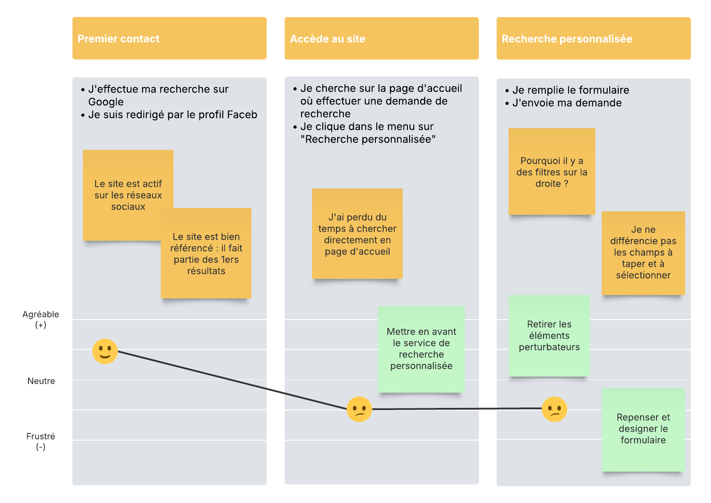
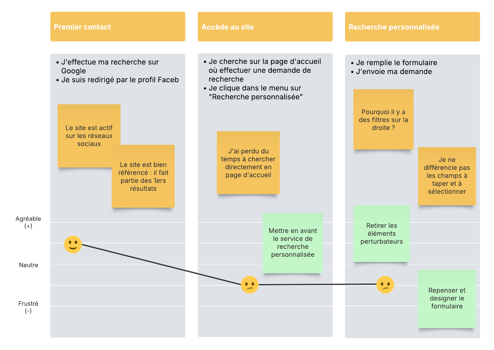

Contexte
Artois Auto Import est une entreprise spécialisée dans la vente de véhicules premium et sportifs. Basée à Aubigny-en-Artois, elle propose des marques prestigieuses telles que Mercedes, Porsche, BMW ou encore Ferrari. Cependant, son site web actuel présente un design vieillissant et une expérience utilisateur peu optimisée, en décalage avec la qualité de ses véhicules.
Objectif de la refonte
- Moderniser l'interface et l'image de marque
- Améliorer l'expérience utilisateur
- Optimiser l'utilisation sur mobile et tablette
- Faciliter la recherche et la prise de contact
- Valoriser les services et les véhicules de l'entreprise
Problèmes identifiés
- Navigation rigide et peu intuitive
- Design dépassé, peu engageant
- Informations sur les véhicules peu lisibles
- Optimisation mobile peu performante
- Peu d'éléments de réassurance (avis, garanties, infos entreprise etc.)
Solutions UX
- Arborescence simplifiée
- Filtres dynamiques dans le catalogue
- Pages véhicules avec toutes les infos essentielles + CTA visibles
- Formulaires courts et engageants
- Responsive design adapté à tous les appareils
Solutions UI
- Réagencement de la charte graphique
- Typographie moderne et lisible
- Mise en avant des visuels (grandes galeries, zoom, carrousel)
- Animations douces (hover, transitions)
- Icônes explicites et visuels rassurants (avis, garanties, labels)


 
